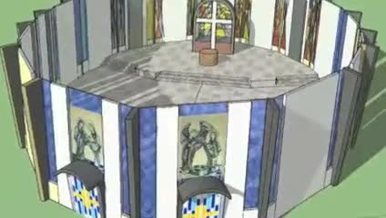
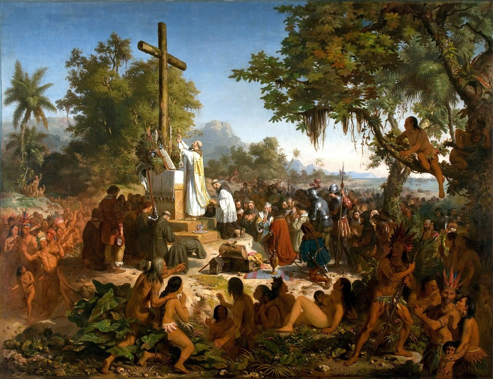
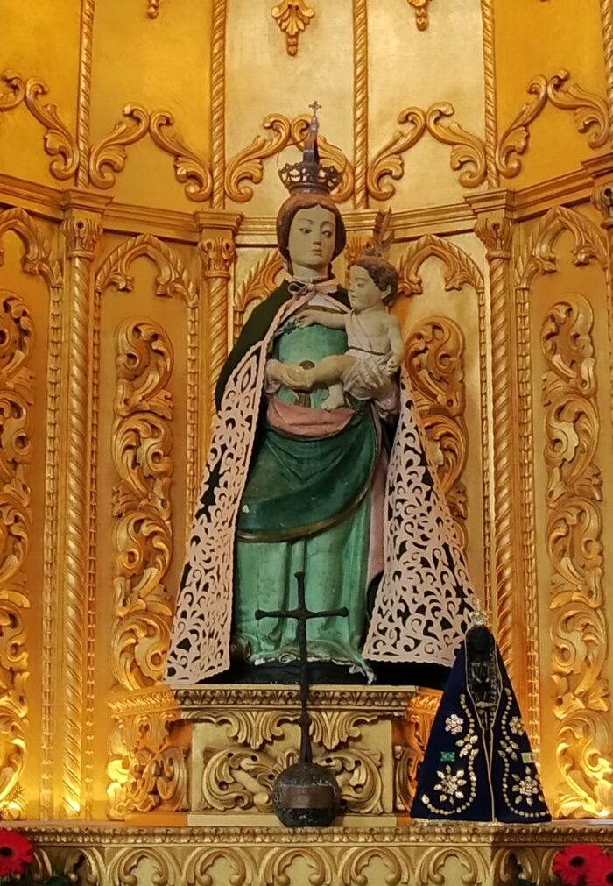

Confissões
Terça a sexta · 15h às 17h45
Também orientação espiritual. Confirme a disponibilidade com a secretaria antes de ir.
Moema · Arquidiocese de São Paulo · desde 1970
Uma comunidade que começou a celebrar na casa de uma família da Praça Paul Harris, em 1964.

Santa Missa
Horário habitual
Celebrações santas e feriados podem ter horários diferentes: confirme no Instagram da paróquia ou na secretaria. Horários publicados pela paróquia, consulta em 26/11/2026.
Terça a sexta · 15h às 17h45
Também orientação espiritual. Confirme a disponibilidade com a secretaria antes de ir.
Quinta · 15h
Exposição do Santíssimo às 15h e bênção às 17h45.
30 minutos antes das missas
E o terço meditado todo primeiro sábado do mês, às 15h.
Qua 18h · Sáb 16h · Dom 11h
Transmissão pelo Facebook e pelo canal da paróquia no YouTube.
Participe
Nenhuma data especial está confirmada nesta demonstração. Os avisos da comunidade saem no Instagram da paróquia.
Vida em comunidade
Festa, Eucaristia, catequese e rua: o que a comunidade mostra nos seus álbuns.
Para a vida toda
O primeiro passo é sempre a secretaria. As orientações abaixo são as que a paróquia publica.
Sacramento de iniciação: acolhe na condição de filhos e participa da vida de Cristo e de sua missão (Mt 28,19).
A catequese eucarística e a primeira comunhão são direitos da criança batizada, para participar toda semana da mesa do Senhor.
Catequese de confirmação para adolescentes, jovens e adultos, permanentemente aberta a quem quer confirmar o Espírito Santo.
Comunhão de vida e amor, elevada por Cristo à dignidade de sacramento, para o bem dos cônjuges e das famílias.
História da comunidade
Em novembro de 1963, moradores do Jardim Novo Mundo obtêm licença para celebrar as missas dominicais em residências. As primeiras missas acontecem em 1964, na casa de Roberto e Helena.
Com autorização da Prefeitura, as missas passam ao barracão da escola, de junho de 1964 a março de 1967. Em 1965, os padres salvatorianos assumem o compromisso de ajudar a erguer o templo; em 1966, o padre Marcelino Aldo Zanella assume a comunidade e as obras.
Na esquina da Avenida dos Eucaliptos com a Alameda Jauaperi, um barracão de troncos de eucalipto é a primeira igreja do bairro. As missas passam a ser celebradas ali a partir de 1967.
Em dezembro de 1967, a comunidade promove a rifa de carros usados para ajudar a pagar a obra da futura igreja.
Em 9 de março, o cardeal dom Agnelo Rossi, arcebispo de São Paulo, lança a pedra fundamental. Padre Zanella e o cardeal depositam escritos no local do futuro altar.
A nova igreja, projeto de Anca e Cláudio Di Segni, começa a ser construída em janeiro. Colunas e laje em concreto maciço levantam a estrutura em cerca de dois anos.
Em 29 de junho de 1970, o cardeal Rossi decreta a criação da paróquia, desmembrada de Nossa Senhora Aparecida de Moema. A primeira missa no novo templo é em 2 de agosto de 1970. A instalação oficial vem em 25 de abril de 1971, com o padre Zanella como primeiro pároco.
O arquivo da paróquia guarda a igreja ainda em obras entre 1972 e 1973. Em 1977, de cima, já se vê o teto de nervuras que hoje cobre a nave.
Nossa padroeira
Em abril de 1969, uma réplica da imagem histórica de Belmonte, em Portugal, refez a viagem de Pedro Álvares Cabral, desta vez num avião da TAP.
A imagem chegou ao Brasil em 23 de abril de 1969 e foi recebida por uma multidão na Praça Paul Harris. Depois da Eucaristia, foi levada à igreja provisória.
Em 26 de abril de 1969, como no dia 26 de abril de 1500, a imagem foi colocada num altar improvisado enquanto um capelão português celebrava a missa. Ficou no barracão de madeira e, depois, passou à igreja matriz.


Senhora da Esperança, tua alegria era fazer a vontade do Pai. Tua vida era estar atenta às necessidades dos outros. Intercede por nós!
Quando nossa fé vacila. Quando somos tentados a desesperar. Senhora da Esperança, intercede por nós!
Quando fechamos o coração. Quando consentimos à injustiça. Senhora da Esperança, intercede por nós!
Quando parece ser difícil seguir teu Filho. Quando nos cansamos de fazer o bem. Senhora da Esperança, intercede por nós!
Quando o não se antecipa ao nosso sim. Leva-nos a Jesus Cristo, nossa esperança. Amém!
Quatro passos de Maria
Maria ouve o anjo, pergunta e responde com disponibilidade: eis a serva do Senhor, faça-se em mim segundo a tua palavra.
Lc 1,26–38Como imitá-laApresente a Deus, na oração, uma decisão difícil e dê o primeiro passo possível, sem exigir ver o caminho inteiro.
Ao saber que Isabel espera um filho, Maria parte com pressa ao seu encontro e fica com ela cerca de três meses.
Lc 1,39–56Como imitá-laVisite esta semana alguém que precisa de companhia e ofereça uma ajuda concreta.
Maria percebe que o vinho acabou, apresenta a falta a Jesus e diz aos serviçais: fazei o que ele vos disser.
Jo 2,1–11Como imitá-laLeve a Deus a necessidade de alguém, com nome e problema, e depois faça com cuidado o que o Evangelho pede.
Depois da Ascensão, os apóstolos voltam a Jerusalém e perseveram unânimes na oração, com algumas mulheres e Maria, mãe de Jesus.
At 1,12–14Como imitá-laEscolha um horário fixo de oração, como o terço antes da missa, e mantenha-o nos dias sem vontade.
Na fachada, o primeiro passo de Maria está em vidro: o vitral da Anunciação, com o anjo e Maria em tons de azul, olha para a Avenida dos Eucaliptos. O autor do vitral não aparece nas fontes consultadas.
Fale com a paróquia
O diretório da Arquidiocese indica outro expediente (segunda, 13h30 às 17h30; terça a sexta, 8h30 às 17h30). Confirme por telefone antes de ir.
Chamar no WhatsApp